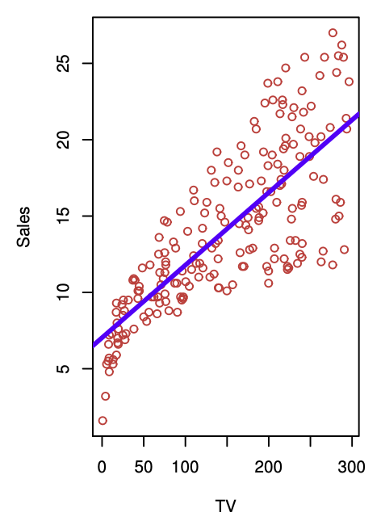
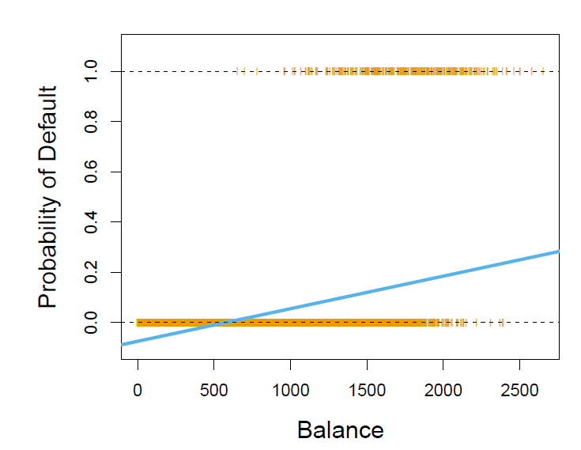
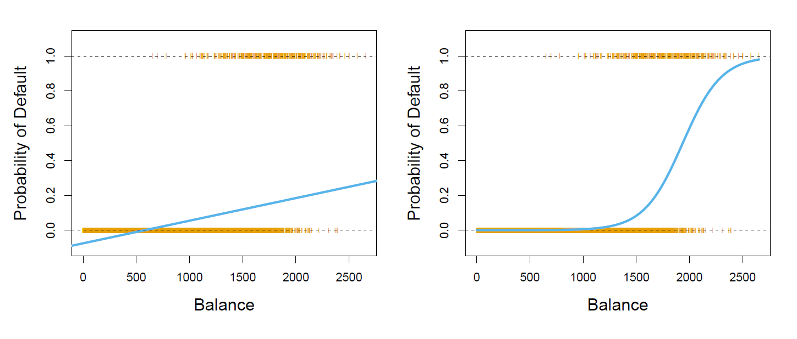
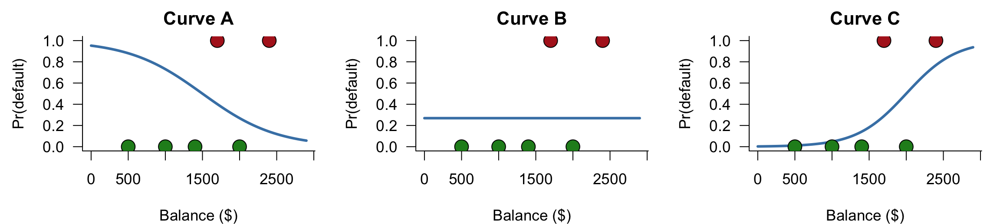
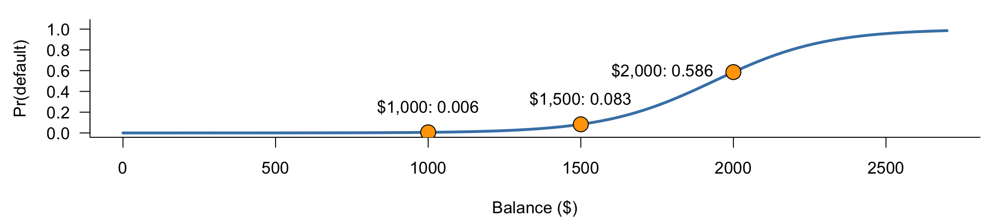

Statistical Learning: Logistic Regression
ISLR, Chapter 4.3
Josh Campbell · Graham Sayle · Kyle Dong · Gerry Peng
2026-10-13
Linear Regression
- Useful for making predictions on numerical data.
- For example, the TV model:

Linear Regression
- Useful for making continuous predictions on numerical data.
- What about for classification tasks? or estimating probabilities?
The Default Dataset
Here we observe

Logistic Regression
Let
Then consider a linear regression model
We use the logistic function
Fit using the “maximum likelihood” method
Linear vs Logistic Regression

Odds
By manipulating the logistic function we have:
which we call the odds
Log Odds (Logits)
By taking the logarithm of both sides we get:
Which we call the log odds or logits
Estimating the coefficients
. Last week we used least squares; here we use maximum likelihood: make close to 1 for defaulters and 0 for non-defaulters.
Taking logs gives the function we maximize over :
No closed form, so software maximizes numerically. Least squares is maximum likelihood when errors are Gaussian.
Which curve makes the data most likely?

Six customers: red = defaulted, green = didn’t. Rank the curves.
| Likelihood |
0.0006 |
0.0207 |
0.0898 |
0.0948 |
The MLE beats every other curve by construction.
Reading the output
Intercept |
-10.6513 |
0.3612 |
-29.49 |
< 0.0001 |
balance |
0.0055 |
0.0002 |
24.95 |
< 0.0001 |
- Same table as last week, with a -statistic in place of (TV had ; balance has )
- means balance doesn’t matter — that’s Curve B. Rejected.
- Each extra $100 of balance multiplies the odds of default by
Interpret on the odds scale, in units that mean something ($100, not $1).
Making predictions
Plug in:

$1000 → $1500 adds 0.08, while $1500 → $2000 adds 0.50.
Same odds ratio, very different change in probability. Unlike linear regression, the effect of depends on where you start.
Qualitative predictors
Code student as a dummy variable. It enters the linear sum like any other predictor and is fit by maximum likelihood:
Table 4.2
Intercept |
-3.5041 |
0.0707 |
-49.55 |
< 0.0001 |
student[Yes] |
0.4049 |
0.1150 |
3.52 |
0.0004 |
Predictions: plug in or
is the difference in log-odds between students and non-students. Positive and significant: students have a higher probability of default.
More than one predictor? - No worries!
For a binary prediction, the formula can be generalized to predictors by:
which can be rearranged to:
Example: Predicting Credit-Card Default
Outcome: Default? (Yes/No)
Why use multiple predictors? Account for balance and income instead of attributing their associations to student status alone.
Source: ISLP, Chapter 4, Tables 4.2 and 4.3 (textbook).
Multiple Predictors: Confounding
Hypothetical model predicting a Stanley Cup win
| Goals scored |
Positive |
Negative |
| Regular-season wins |
— |
Positive |
Entries show coefficient signs.
Hint: Holding wins fixed changes what the goals coefficient means.
Multinomial Logistic Regression
- Extension of logistic regression to more than two classes ()
- Predicts the probability of each possible class
- All class probabilities add up to 1
Example: Emergency room diagnosis
- Stroke
- Drug overdose
- Epileptic seizure
Baseline-Class Approach
- Choose one class as the baseline
- Model the log-odds of other classes relative to it
- The baseline has a score of 0, so
- Changing the baseline does not change the predicted probabilities
Example:
- Stroke: score = 2
- Drug overdose: score = 1
- Epileptic seizure (baseline): score = 0
Softmax Coding
- Alternative representation of multinomial logistic regression
- Assigns a linear score to each class
- Converts scores into probabilities using softmax
Example:
| Stroke |
2 |
66.5% |
| Drug overdose |
1 |
24.5% |
| Epileptic seizure |
0 |
9.0% |
Baseline-class coding and softmax coding are equivalent ways to represent multinomial logistic regression.
Conclusion
- Logistic Regression is used to predict probabilities for binary classification
- Odds are the ratio of success to failure
- Log odds/logits are how we relate the underlying linear model to logistic regression
- Maximum likelihood estimates the coefficients; predictions plug them into the logistic function
- Multiple Logistic Regression is used when we have multiple predictors and a binary outcome
- Multinomial Logistic Regression extends this to more than two classes